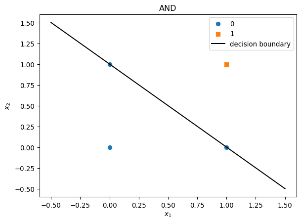
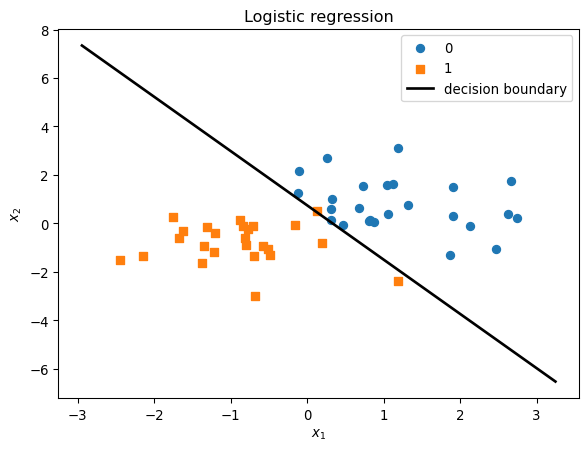

import numpy as np
import matplotlib.pyplot as pltLab 02 - Linear & Logistic Regression
1 목표
- 선형 회귀: 최소제곱법으로 직선 피팅하기
- 퍼셉트론: AND / OR / XOR 게이트 실험 (선형 분리 가능 vs 불가능)
- 로지스틱 회귀: 시그모이드, 결정 경계(decision boundary) 시각화
2 1. 선형 회귀 (1변수)
\(y \approx w_0 + w_1 x\) 형태. 정규방정식 \(\hat{w} = (X^T X)^{-1} X^T y\) 로 한 번에 구할 수 있다.
# 데이터: y = 2 + 3x + 노이즈
np.random.seed(42)
n = 30
x = np.linspace(0, 2, n)
y = 2 + 3 * x + 0.5 * np.random.randn(n)# 설계 행렬 X: 각 행이 [1, x_i]
X = np.column_stack([np.ones(n), x])
w_hat = np.linalg.solve(X.T @ X, X.T @ y)
print("w_0 =", w_hat[0], ", w_1 =", w_hat[1])w_0 = 2.1606891797132195 , w_1 = 2.745237372361261plt.scatter(x, y, label="data")
x_line = np.linspace(0, 2, 100)
y_line = w_hat[0] + w_hat[1] * x_line
plt.plot(x_line, y_line, "r-", label="fitted")
plt.xlabel("x"); plt.ylabel("y"); plt.legend(); plt.show()
3 2. 퍼셉트론 (AND, OR, XOR)
퍼셉트론: \(f(x) = \mathbb{1}[ w^T x + b > 0 ]\). 선형 분리 가능한 문제만 풀 수 있다.
# AND, OR, XOR 진리표 (입력 2개)
X_gate = np.array([[0, 0], [0, 1], [1, 0], [1, 1]])
y_and = np.array([0, 0, 0, 1])
y_or = np.array([0, 1, 1, 1])
y_xor = np.array([0, 1, 1, 0])def perceptron_predict(X, w, b):
""" X: (n, d), w: (d,), b: scalar """
return (X @ w + b > 0).astype(int)
def fit_perceptron(X, y, lr=0.1, epochs=100):
n, d = X.shape
w, b = np.zeros(d), 0.0
for _ in range(epochs):
pred = perceptron_predict(X, w, b)
err = y - pred
w += lr * (X.T @ err)
b += lr * err.sum()
return w, bw_and, b_and = fit_perceptron(X_gate, y_and)
w_or, b_or = fit_perceptron(X_gate, y_or)
print("AND 예측:", perceptron_predict(X_gate, w_and, b_and), " (정답:", y_and, ")")
print("OR 예측:", perceptron_predict(X_gate, w_or, b_or), " (정답:", y_or, ")")AND 예측: [0 0 0 1] (정답: [0 0 0 1] )
OR 예측: [0 1 1 1] (정답: [0 1 1 1] )# XOR: 선형 분리 불가능 → 퍼셉트론 한 개로는 학습 실패
w_xor, b_xor = fit_perceptron(X_gate, y_xor)
print("XOR 예측:", perceptron_predict(X_gate, w_xor, b_xor), " (정답:", y_xor, ")")XOR 예측: [0 0 0 0] (정답: [0 1 1 0] )4 3. 결정 경계 시각화 (AND / OR)
\(w_1 x_1 + w_2 x_2 + b = 0\) 이 결정 경계(직선)이다. \(x_2 = -(w_1/w_2)x_1 - b/w_2\).
def plot_decision_boundary_2d(X, y, w, b, title=""):
plt.scatter(X[y==0, 0], X[y==0, 1], marker="o", label="0")
plt.scatter(X[y==1, 0], X[y==1, 1], marker="s", label="1")
x1 = np.array([-0.5, 1.5])
if np.abs(w[1]) > 1e-8:
x2 = -(w[0] * x1 + b) / w[1]
plt.plot(x1, x2, "k-", label="decision boundary")
plt.xlabel("$x_1$"); plt.ylabel("$x_2$"); plt.legend(); plt.title(title); plt.show()plot_decision_boundary_2d(X_gate, y_and, w_and, b_and, "AND")
plot_decision_boundary_2d(X_gate, y_or, w_or, b_or, "OR")
5 4. 로지스틱 회귀 (결정 경계)
로지스틱 회귀: \(P(y=1|x) = \sigma(w^T x + b)\), \(\sigma(z) = 1/(1+e^{-z})\).
결정 경계는 \(\sigma=0.5\) 인 곳, 즉 \(w^T x + b = 0\) (직선).
def sigmoid(z):
return 1 / (1 + np.exp(-np.clip(z, -500, 500)))
# 2D 예시 데이터: 두 클래스가 약간 겹침
np.random.seed(1)
n1, n2 = 25, 25
X1 = np.random.randn(n1, 2) + np.array([1, 1])
X2 = np.random.randn(n2, 2) + np.array([-1, -1])
X_lr = np.vstack([X1, X2])
y_lr = np.array([0] * n1 + [1] * n2)# 간단한 경사 하강으로 w, b 추정 (음의 로그우도 최소화)
def fit_logistic_simple(X, y, lr=0.1, epochs=2000):
n, d = X.shape
w, b = np.zeros(d), 0.0
for _ in range(epochs):
logit = X @ w + b
p = sigmoid(logit)
grad_w = X.T @ (p - y)
grad_b = (p - y).sum()
w -= lr * grad_w
b -= lr * grad_b
return w, b
w_lr, b_lr = fit_logistic_simple(X_lr, y_lr)
pred_lr = (sigmoid(X_lr @ w_lr + b_lr) >= 0.5).astype(int)
print("정확도:", (pred_lr == y_lr).mean())정확도: 0.98# 결정 경계 그리기: w1*x1 + w2*x2 + b = 0 → x2 = -(w1*x1 + b)/w2
plt.scatter(X_lr[y_lr==0, 0], X_lr[y_lr==0, 1], marker="o", label="0")
plt.scatter(X_lr[y_lr==1, 0], X_lr[y_lr==1, 1], marker="s", label="1")
x1_min, x1_max = X_lr[:, 0].min() - 0.5, X_lr[:, 0].max() + 0.5
x1_grid = np.linspace(x1_min, x1_max, 100)
if np.abs(w_lr[1]) > 1e-8:
x2_boundary = -(w_lr[0] * x1_grid + b_lr) / w_lr[1]
plt.plot(x1_grid, x2_boundary, "k-", lw=2, label="decision boundary")
plt.xlabel("$x_1$"); plt.ylabel("$x_2$"); plt.legend(); plt.title("Logistic regression"); plt.show()
6 5. 연습
- XOR 데이터에 대해 두 개의 퍼셉트론을 써서 해결하는 방법을 생각해 보세요.
(힌트: 은닉층 하나를 두고 AND(OR, OR) 같은 구조.) - 위 로지스틱 회귀에서
epochs를 100으로 줄이면 결정 경계가 어떻게 달라지는지 확인해 보세요.
7 참고
- 퍼셉트론 하나 = 선형 결정 경계만 가능. XOR은 다층 퍼셉트론(MLP)으로 해결.
- 로지스틱 회귀의 결정 경계도 선형; 비선형 경계가 필요하면 특성 추가 또는 신경망을 사용한다.